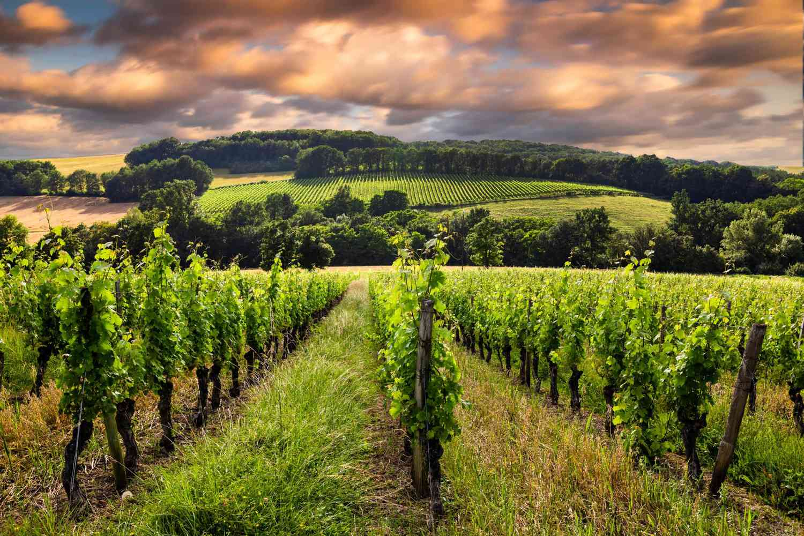
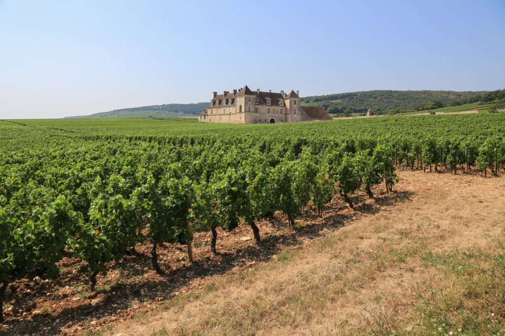
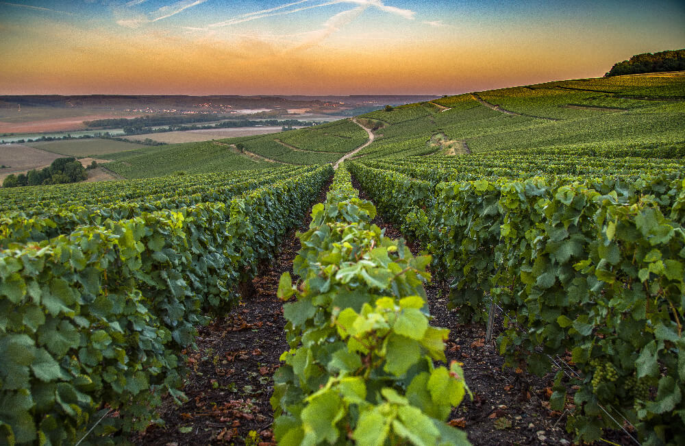
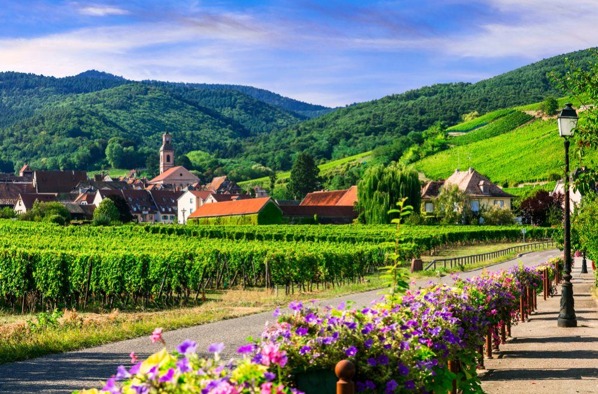
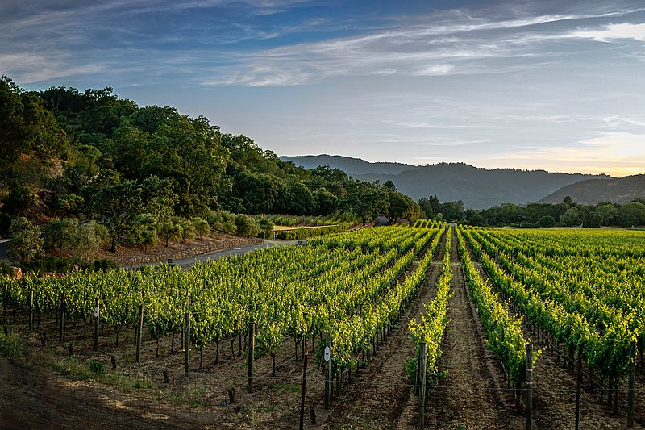
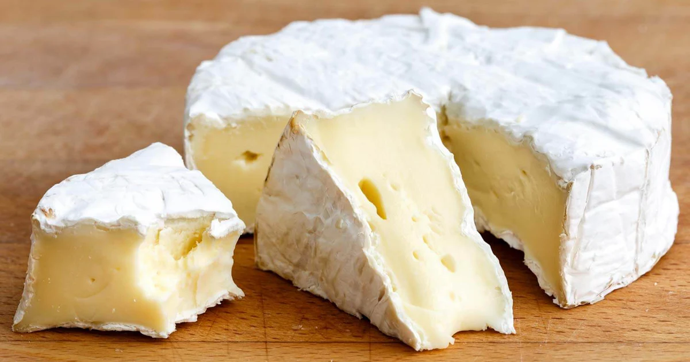
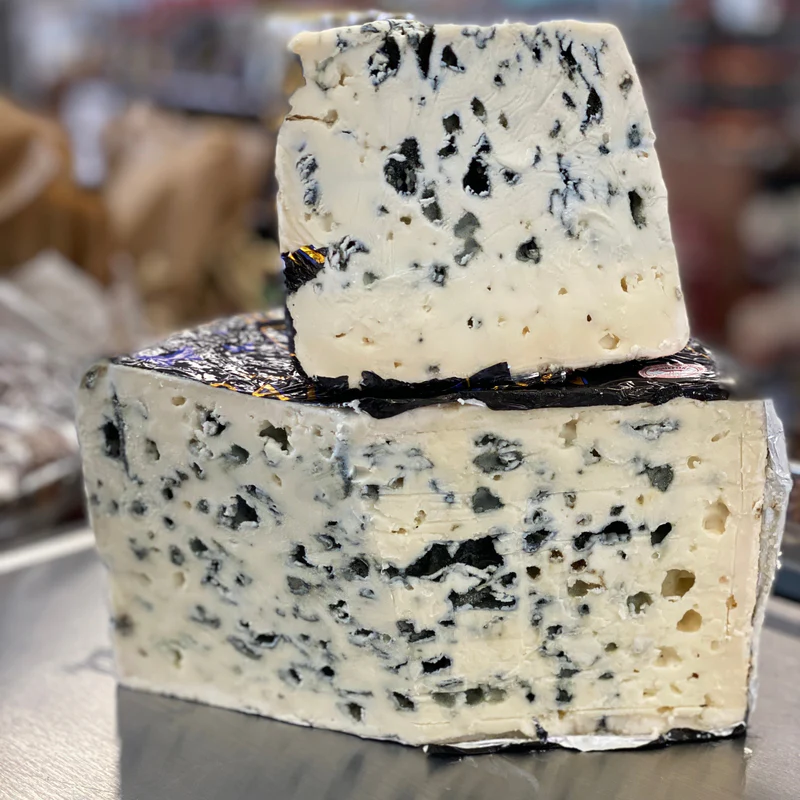
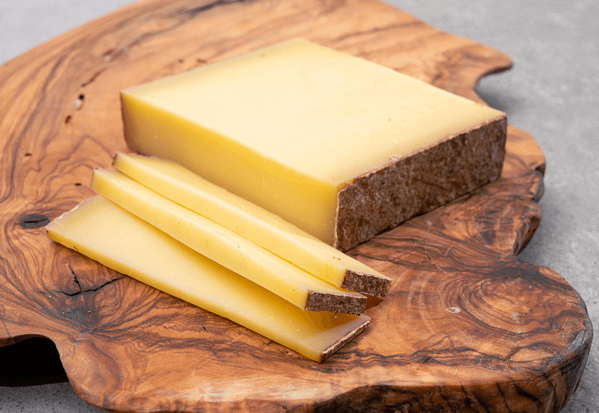

France is one of the world's oldest and most prestigious wine-producing nations, with a viticultural history stretching back over two thousand years. French wines have set the global standard for quality and style, and the country's major wine regions — Bordeaux, Burgundy, Champagne, Alsace, the Rhône Valley, and the Loire Valley — are legendary among wine lovers worldwide. Each region produces wines of remarkable character shaped by its unique terroir, climate, and centuries of accumulated knowledge.
Pairing wine with cheese is a fundamental pleasure of French life. France produces more than 1,600 varieties of cheese, many of which carry the prestigious AOC (Appellation d'Origine Contrôlée) designation that protects their traditional methods and geographic origins. Together, wine and cheese represent the art of living well — a cornerstone of French culture and hospitality.

Home to legendary châteaux like Pétrus and Mouton Rothschild, Bordeaux produces some of the world's most sought-after red wines from Cabernet Sauvignon and Merlot.

Pinot Noir and Chardonnay reign supreme in Burgundy, where the concept of terroir was born. Premier and Grand Cru wines from this region are among the most celebrated on Earth.

The birthplace of sparkling wine, the Champagne region produces the world's most famous celebratory drink from Chardonnay, Pinot Noir, and Pinot Meunier grapes.

The Loire Valley produces a stunning diversity of wines including crisp Muscadet, mineral Sancerre, and the sweet, age-worthy Vouvray from the Chenin Blanc grape.
Bordering Germany, Alsace produces aromatic white wines of great distinction from Riesling, Gewurztraminer, and Pinot Gris, presented in distinctive tall flute bottles.

From the powerful Syrah reds of the Northern Rhône to the rich Grenache blends of Châteauneuf-du-Pape in the south, the Rhône produces some of France's most characterful wines.

Often called the "King of Cheeses," Brie de Meaux is a soft, bloomy-rind cheese from the Île-de-France region with a rich, creamy interior and mushroomy aroma. Best enjoyed at room temperature with a crusty baguette.

Normandy's iconic soft cheese with a white mold rind and a luscious, gooey interior. With protected AOC status, true Camembert de Normandie must be made from raw Normandy milk ladled by hand.

France's most famous blue cheese — made from raw sheep's milk and aged in the natural Combalou caves near the village of Roquefort. Sharp, salty, and intensely flavorful, it is one of the world's great cheeses.

A firm, cooked mountain cheese from the Jura region, made from the milk of Montbéliarde cows that graze on Alpine meadows. Aged wheels develop complex flavors of caramel, hazelnuts, and fruit over 12 to 36 months.